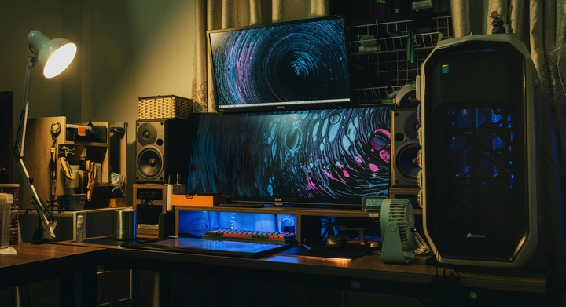
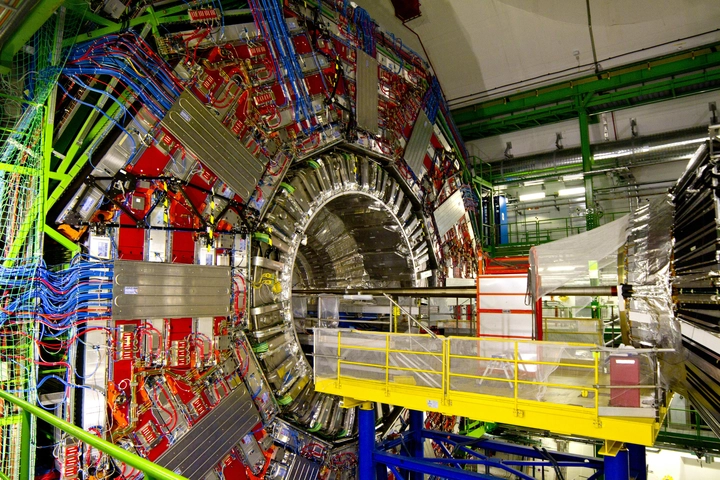

Chip Lượng Tử Willow 105 Qubit của Google Mở Ra Kỷ Nguyên Mới Của Tính Toán
Trong suốt nhiều thập kỷ qua, thế giới công nghệ luôn bị ám ảnh bởi một giấc mơ — máy tính lượng tử. Đây không chỉ là bước tiến kế tiếp sau máy tính cổ điển, mà còn là cuộc cách mạng có thể thay đổi hoàn toàn mọi lĩnh vực từ khoa học, y học, tài chính, cho đến trí tuệ nhân tạo.
Và giờ đây, giấc mơ ấy dường như đang dần trở thành hiện thực khi ngày 22/10/2025 vừa qua, Google đã công bố chip lượng tử mới mang tên “Willow” với 105 qubit, cùng tuyên bố đã đạt được “lợi thế lượng tử có thể xác minh được” (verifiable quantum advantage) — điều mà trước đây chưa từng có công ty nào chứng minh rõ ràng.
Đây có thể là dấu mốc quan trọng của ngành máy tính lượng tử trên toàn thế giới, mở ra một trang sử mới cho lịch sử nhân loại về khoa học máy tính
1. Lợi thế lượng tử là gì và vì sao nó quan trọng
Để hiểu ý nghĩa của tuyên bố này, chúng ta cần hiểu khái niệm “lợi thế lượng tử” (quantum advantage).
Nói đơn giản, đây là khi một máy tính lượng tử thực hiện được một tác vụ mà máy tính cổ điển (classical computer) không thể làm trong thời gian hợp lý.
Ví dụ: nếu một siêu máy tính mạnh nhất thế giới mất hàng ngàn năm để giải một bài toán, trong khi máy lượng tử chỉ cần vài phút, thì đó là lợi thế lượng tử.
Trước đây, vào năm 2019, Google từng tuyên bố đạt được “quantum supremacy” (ưu thế lượng tử) với chip Sycamore 53 qubit, khi giải một bài toán ngẫu nhiên mà họ cho rằng “máy tính cổ điển cần 10.000 năm mới giải được”. Tuy nhiên, tuyên bố đó bị IBM và nhiều nhà khoa học phản biện, cho rằng bài toán đó không thực tế và có thể giải được bằng máy tính cổ điển nếu tối ưu tốt hơn.
Lần này, với chip Willow 105 qubit, Google không chỉ khẳng định lợi thế, mà còn bổ sung yếu tố “verifiable” – có thể xác minh được, nghĩa là các nhà nghiên cứu độc lập có thể kiểm chứng kết quả bằng các phương pháp toán học và mô phỏng. Đây chính là điểm khác biệt mang tính lịch sử.
2. Cấu trúc và sức mạnh của chip lượng tử Willow
Theo nhóm nghiên cứu của Google Quantum AI, Willow là chip siêu dẫn (superconducting chip) được phát triển dựa trên kiến trúc kế nhiệm của Sycamore, nhưng với nhiều cải tiến về:
-
Số lượng qubit: từ 53 (Sycamore) lên 105 qubit, gấp đôi.
-
Độ ổn định (coherence time): tăng đáng kể, giúp qubit duy trì trạng thái lượng tử lâu hơn.
-
Tỷ lệ lỗi (error rate): giảm xuống mức cực thấp nhờ kỹ thuật điều khiển tần số chính xác và làm lạnh gần độ không tuyệt đối.
-
Khả năng đo kiểm (verifiable computation): tích hợp hệ thống theo dõi kết quả trung gian để chứng minh kết quả lượng tử có thể tái tạo bằng phương pháp toán học.
Google đã sử dụng Willow để thực hiện một bài toán gọi là “random circuit sampling” — tức là mô phỏng một hệ lượng tử ngẫu nhiên. Kết quả cho thấy Willow chạy nhanh hơn 13.000 lần so với siêu máy tính mạnh nhất hiện nay của thế giới.
3. Tại sao 105 qubit lại là con số đặc biệt
Con số “105 qubit” có vẻ nhỏ nếu so với hàng tỷ transistor trong CPU hiện nay, nhưng trong thế giới lượng tử, mỗi qubit là một thế giới riêng biệt.
Khác với bit nhị phân chỉ có hai trạng thái (0 hoặc 1), qubit có thể tồn tại ở cả hai trạng thái cùng lúc nhờ hiện tượng chồng chất lượng tử (superposition). Ngoài ra, các qubit còn có thể liên kết (entanglement) – tạo ra các mối tương quan phức tạp mà máy tính cổ điển không thể mô phỏng được hiệu quả.
Vì vậy, sức mạnh của máy lượng tử tăng theo hàm mũ, chứ không tuyến tính.
Nếu bạn tăng gấp đôi số qubit, sức mạnh tính toán có thể tăng hàng triệu lần.
Do đó, việc Google nâng từ 53 qubit lên 105 qubit không chỉ là gấp đôi số lượng phần tử, mà là một bước nhảy vọt khổng lồ về khả năng tính toán.
4. Lợi ích tiềm năng của máy tính lượng tử
Việc đạt được lợi thế lượng tử có thể xác minh mở ra hàng loạt ứng dụng mang tính cách mạng trong nhiều lĩnh vực. Dưới đây là một số ví dụ tiêu biểu:
4.1. Mô phỏng phân tử và khám phá thuốc
Các phản ứng hóa học trong thế giới thực đều dựa trên cơ chế lượng tử, nhưng mô phỏng chúng bằng máy tính cổ điển cực kỳ tốn tài nguyên.
Máy lượng tử có thể mô phỏng chính xác cấu trúc electron và năng lượng của phân tử, giúp rút ngắn hàng năm nghiên cứu dược phẩm xuống chỉ còn vài ngày. Điều này đặc biệt hữu ích trong phát triển thuốc ung thư, vaccine, hoặc vật liệu sinh học.
4.2. Tối ưu hóa quy mô lớn
Nhiều ngành như vận tải, logistic, năng lượng hay tài chính đều gặp bài toán tối ưu phức tạp — ví dụ: tìm tuyến đường ngắn nhất cho hàng ngàn điểm giao hàng, hoặc danh mục đầu tư hiệu quả nhất trong thị trường biến động.
Máy lượng tử có thể giải các bài toán tối ưu tổ hợp nhanh hơn hàng nghìn lần, giúp tiết kiệm chi phí và năng lượng khổng lồ.
4.3. Mật mã học và bảo mật
Hầu hết hệ thống bảo mật hiện nay (như RSA) dựa vào việc phân tích số nguyên lớn, mà máy tính cổ điển mất hàng triệu năm để giải.
Tuy nhiên, một máy lượng tử đủ mạnh có thể phá vỡ mã RSA chỉ trong vài phút bằng thuật toán Shor.
Điều này đồng nghĩa với việc toàn bộ nền tảng bảo mật Internet hiện nay cần được tái thiết kế — một cuộc cách mạng vừa đáng sợ vừa tất yếu.

4.4. Trí tuệ nhân tạo và học máy
Một số thuật toán AI, đặc biệt là trong lĩnh vực tối ưu hóa mạng nơ-ron và học tăng cường, có thể được tăng tốc đáng kể bằng lượng tử.
Google, vốn là công ty hàng đầu trong AI, chắc chắn nhìn thấy tiềm năng kết hợp giữa Quantum Computing + AI, tạo ra các mô hình học máy “siêu thông minh” trong tương lai.
5. Tại sao “có thể xác minh” lại quan trọng
Năm 2019, khi Google công bố “Quantum Supremacy”, họ bị chỉ trích vì kết quả không thể kiểm chứng độc lập.
Lần này, nhóm Google Quantum AI khẳng định rằng các phép đo từ chip Willow có thể được xác minh toán học, nghĩa là người khác có thể kiểm chứng rằng kết quả đến từ tính toán lượng tử thật sự, chứ không phải “mẹo mô phỏng”.
Việc “có thể xác minh” giúp cộng đồng khoa học tin tưởng hơn vào tính chân thực của kết quả và đặt nền móng cho các ứng dụng thương mại trong tương lai.
Nó giống như việc bạn không chỉ nói “tôi chạy nhanh hơn”, mà còn có bằng chứng rõ ràng, kiểm tra được rằng bạn thật sự nhanh hơn.
6. Cuộc đua lượng tử toàn cầu
Google không phải là người duy nhất trong cuộc đua này.
Các tập đoàn như IBM, Intel, Microsoft, Rigetti, IonQ, D-Wave, hay thậm chí Trung Quốc đều đang đổ hàng tỷ đô la vào nghiên cứu lượng tử.
-
IBM gần đây đã ra mắt chip lượng tử Condor với 1.121 qubit, tuy nhiên vẫn chưa chứng minh được lợi thế lượng tử thực tế.
-
China’s Origin Quantum tuyên bố phát triển hệ lượng tử độc lập, nhưng chưa công bố chi tiết kết quả.
-
Microsoft đang theo hướng “topological qubit” – một hướng đi mới, hứa hẹn độ ổn định cao hơn.
Tuy nhiên, với việc Google đạt được verifiable quantum advantage, họ đã tạm thời vượt lên dẫn đầu, ít nhất về mặt học thuật và thực nghiệm.
7. Những thách thức còn tồn tại
Dù công nghệ này đầy hứa hẹn, máy tính lượng tử vẫn chưa thể thay thế máy tính cổ điển trong tương lai gần.
Một số vấn đề lớn vẫn còn tồn tại:
-
Tỷ lệ lỗi cao: dù đã cải thiện, các qubit vẫn rất nhạy cảm với nhiệt độ, nhiễu điện từ, và rung động.
-
Cần môi trường cực lạnh: hầu hết chip lượng tử phải hoạt động ở -273°C, gần độ không tuyệt đối.
-
Chưa có phần mềm phổ thông: viết chương trình cho máy lượng tử đòi hỏi kiến thức vật lý phức tạp.
-
Không phải mọi bài toán đều phù hợp: máy lượng tử chỉ vượt trội ở một số loại tính toán nhất định.
Vì vậy, trong giai đoạn hiện tại, máy lượng tử và máy cổ điển sẽ cùng tồn tại, hỗ trợ lẫn nhau — gọi là “hybrid computing” (tính toán lai).

8. Tương lai của máy tính lượng tử
Nếu những tiến bộ như Willow tiếp tục, thế giới sẽ bước vào kỷ nguyên hậu-Moore (post-Moore’s Law), nơi mà hiệu năng tính toán không còn bị giới hạn bởi vật lý transistor.
Hãy tưởng tượng trong 10 năm tới:
-
Các nhà khoa học có thể mô phỏng phân tử mới trong vài giây.
-
Doanh nghiệp tối ưu hóa sản xuất, vận tải, năng lượng theo thời gian thực.
-
Trí tuệ nhân tạo lượng tử hiểu và học từ dữ liệu với tốc độ vượt xa hiện nay.
Đó không chỉ là giấc mơ khoa học — mà là tương lai đang được Google và các tập đoàn khác kiến tạo từng ngày.
9. Một cột mốc đáng nhớ của nhân loại
Chip lượng tử Willow 105 qubit của Google không chỉ là thành tựu kỹ thuật, mà là bước ngoặt mang tính biểu tượng trong hành trình tiến hóa của công nghệ nhân loại.
Lần đầu tiên, thế giới có thể xác minh được lợi thế lượng tử thực sự — điều mà trước đây chỉ tồn tại trong lý thuyết.
Dù còn nhiều thách thức, nhưng mỗi bước đi như Willow đưa chúng ta gần hơn với thời đại mà trí tuệ nhân tạo, khoa học, và con người có thể chạm tới những điều từng được xem là không thể.
Và nếu tương lai của máy tính lượng tử bắt đầu từ một khoảnh khắc nào đó, thì khoảnh khắc Google công bố Willow có lẽ chính là thời điểm ấy.